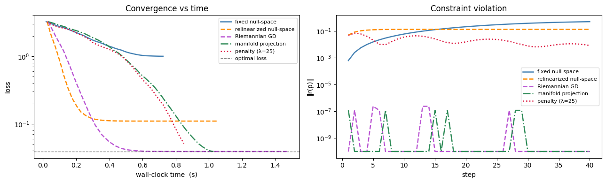
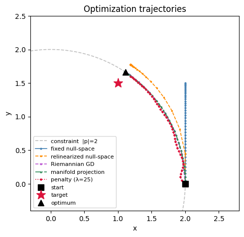

import time
import jax
import jax.numpy as jnp
import matplotlib.pyplot as plt
import numpy as np
import optax
from jaxcad.constraints import (
DistanceConstraint,
Vector,
constraint_residuals,
make_manifold_projection,
null_space,
)
from jaxcad.extraction import extract_parametersConstrained Optimization
Minimize ‖p − target‖² subject to |p| = 2 using five strategies.
Setup
p₀ = (2, 0, 0), target = (1, 1.5, 0). run times N steps after a warm-up call to exclude JAX compilation.
anchor = Vector(jnp.array([0.0, 0.0, 0.0]))
p = Vector(jnp.array([2.0, 0.0, 0.0]), free=True, name="p")
distance_constraint = DistanceConstraint(anchor, p, distance=2.0)
target = jnp.array([1.0, 1.5, 0.0])free_params, fixed_params, metadata = extract_parameters(distance_constraint)
print("free_params", free_params)
print("fixed_params", fixed_params)
print("metadata", metadata)
# Optimal constrained solution: project target onto |p|=2 sphere
p_star = target * (2.0 / jnp.linalg.norm(target))
optimal_loss = float(jnp.sum((p_star - target) ** 2))
print(f"p_star ≈ {np.array(p_star).round(3)}, optimal_loss = {optimal_loss:.4f}")free_params {'p': Array([2., 0., 0.], dtype=float32)}
fixed_params {'distanceconstraint_0.param1': Array([0., 0., 0.], dtype=float32), 'distanceconstraint_0.distance': Array(2., dtype=float32, weak_type=True)}
metadata {'p': Vector(value=Array([2., 0., 0.], dtype=float32), free=True, name='p', bounds=None)}
p_star ≈ [1.109 1.664 0. ], optimal_loss = 0.0389N_STEPS = 40
LAMBDA = 25.0
def full_objective(full):
return jnp.sum((full[p.name] - target) ** 2)
def run(grad_fn, opt, full_init, n=N_STEPS):
"""Run n gradient steps.
Always passes ``params=full`` to ``opt.update`` so transforms like
``make_manifold_projection`` that need the current params work correctly.
Standard optax transforms (adam, etc.) simply ignore the extra kwarg.
"""
opt_state = opt.init(full_init)
grad_fn(full_init) # warm-up to exclude JAX compilation time
hist = {"loss": [], "violation": [], "cumtime": [], "traj": [np.array(full_init["p"])]}
t0, full = time.perf_counter(), full_init
for i in range(n):
val, g = grad_fn(full)
updates, opt_state = opt.update(g, opt_state, full)
full = optax.apply_updates(full, updates)
hist["loss"].append(float(val))
hist["violation"].append(float(jnp.linalg.norm(constraint_residuals(full, metadata))))
hist["cumtime"].append(time.perf_counter() - t0)
hist["traj"].append(np.array(full["p"]))
if i % 5 == 0:
print(f"Step {i:2d}, loss {val:.4f}, |r| {hist['violation'][-1]:.4f}")
return hist, fullFixed null-space projection
N computed once at x₀; gradient projected onto NNᵀ each step.
def loss_ns_fixed(reduced_vector, N):
return full_objective(N @ reduced_vector)
value_and_grad_ns_fixed = jax.value_and_grad(loss_ns_fixed)
N_fixed = null_space(free_params, metadata)
def grad_ns_fixed(full: dict):
reduced = full @ N_fixed
loss, g_reduced = value_and_grad_ns_fixed(reduced, N_fixed)
return loss, N_fixed @ g_reduced
optimizer = optax.adam(learning_rate=0.05)
h_ns_fixed, end_ns_fixed = run(grad_ns_fixed, opt=optimizer, full_init=free_params)Step 0, loss 3.2500, |r| 0.0006
Step 5, loss 2.5647, |r| 0.0221
Step 10, loss 2.0142, |r| 0.0718
Step 15, loss 1.5998, |r| 0.1431
Step 20, loss 1.3132, |r| 0.2274
Step 25, loss 1.1365, |r| 0.3146
Step 30, loss 1.0441, |r| 0.3952
Step 35, loss 1.0072, |r| 0.4619Relinearized null-space projection
N recomputed at the current point each step so the gradient is projected onto the tangent plane at the current position, not just the initial one. Plain SGD is used rather than Adam: Adam’s element-wise adaptive scaling distorts the step as the null space rotates (components that were zero acquire non-zero projections and get amplified). Violation still accumulates because steps along the tangent plane leave the curved manifold by O(lr²κ) with no correction.
value_and_grad_full = jax.value_and_grad(full_objective)
def grad_ns_relin(full: dict):
N = null_space(full, metadata)
loss, g = value_and_grad_full(full)
return loss, N @ (g @ N) # project gradient onto current tangent space
# Use plain SGD, not Adam: Adam's element-wise adaptive scaling amplifies components
# that are newly introduced as the null space rotates, pushing steps off the tangent plane.
h_ns_relin, end_ns_relin = run(grad_ns_relin, opt=optax.sgd(0.15), full_init=free_params)Step 0, loss 3.2500, |r| 0.0500
Step 5, loss 0.3380, |r| 0.1287
Step 10, loss 0.1223, |r| 0.1338
Step 15, loss 0.1104, |r| 0.1340
Step 20, loss 0.1098, |r| 0.1340
Step 25, loss 0.1097, |r| 0.1340
Step 30, loss 0.1097, |r| 0.1340
Step 35, loss 0.1097, |r| 0.1340Manifold projection via make_manifold_projection
Chain make_manifold_projection(metadata) after any optax optimizer. On each call to optimizer.update(grads, state, params) it computes new_params = params + adam_update, projects onto the constraint manifold via a Newton correction, then returns projected − params as the effective update — so apply_updates(params, updates) lands exactly on the manifold. The run loop passes params=full to every opt.update call, which is what activates the projection.
optimizer_proj = optax.chain(optax.adam(0.05), make_manifold_projection(metadata))
value_and_grad_proj = jax.value_and_grad(full_objective)
def grad_proj(full):
return value_and_grad_proj(full)
h_proj, end_proj = run(grad_proj, opt=optimizer_proj, full_init=free_params)Step 0, loss 3.2500, |r| 0.0000
Step 5, loss 2.4846, |r| 0.0000
Step 10, loss 1.7493, |r| 0.0000
Step 15, loss 1.1098, |r| 0.0000
Step 20, loss 0.6186, |r| 0.0000
Step 25, loss 0.2950, |r| 0.0000
Step 30, loss 0.1201, |r| 0.0000
Step 35, loss 0.0508, |r| 0.0000Riemannian gradient descent (relinearized + projection)
Combine both ideas: step along the current tangent plane (grad_ns_relin) then snap back to the manifold with make_manifold_projection. This is the hybrid — it gets the correct manifold-aware gradient direction and enforces the constraint exactly after every step. Chaining optax.sgd with make_manifold_projection requires no new code.
optimizer_riem = optax.chain(optax.sgd(0.15), make_manifold_projection(metadata))
h_riem, end_riem = run(grad_ns_relin, opt=optimizer_riem, full_init=free_params)Step 0, loss 3.2500, |r| 0.0000
Step 5, loss 0.2350, |r| 0.0000
Step 10, loss 0.0475, |r| 0.0000
Step 15, loss 0.0393, |r| 0.0000
Step 20, loss 0.0389, |r| 0.0000
Step 25, loss 0.0389, |r| 0.0000
Step 30, loss 0.0389, |r| 0.0000
Step 35, loss 0.0389, |r| 0.0000Penalty method
Augmented loss: ‖p − t‖² + λ‖r(p)‖². Penalty Hessian eigenvalue in the normal direction is 2 + 2λ; stable LR ≤ 1/(1 + 2λ).
LR_PENALTY = 2.5 / (1.0 + 2.0 * LAMBDA)
optimizer_penalty = optax.adam(learning_rate=LR_PENALTY)
def loss_penalty(full):
return full_objective(full) + LAMBDA * jnp.sum(constraint_residuals(full, metadata) ** 2)
value_and_grad_penalty = jax.value_and_grad(loss_penalty)
def grad_penalty(full):
val = full_objective(full)
_, g = value_and_grad_penalty(full)
return val, g
h_penalty, end_penalty = run(grad_penalty, opt=optimizer_penalty, full_init=free_params)
print(f"final loss={h_penalty['loss'][-1]:.4f} violation={h_penalty['violation'][-1]:.2e}")Step 0, loss 3.2500, |r| 0.0484
Step 5, loss 2.5040, |r| 0.0102
Step 10, loss 1.8465, |r| 0.0424
Step 15, loss 1.3065, |r| 0.0186
Step 20, loss 0.8607, |r| 0.0191
Step 25, loss 0.4898, |r| 0.0206
Step 30, loss 0.2535, |r| 0.0066
Step 35, loss 0.1052, |r| 0.0109
final loss=0.0511 violation=8.36e-03STYLES = {
"fixed null-space": (h_ns_fixed, "steelblue", "-", "o"),
"relinearized null-space": (h_ns_relin, "darkorange", "--", "s"),
"Riemannian GD": (h_riem, "mediumorchid", "--", "P"),
"manifold projection": (h_proj, "seagreen", "-.", "^"),
f"penalty (λ={LAMBDA:.0f})": (h_penalty, "crimson", ":", "D"),
}
FLOOR = 1e-10
fig, axes = plt.subplots(1, 2, figsize=(13, 4))
ax = axes[0]
for label, (h, color, ls, _) in STYLES.items():
ax.semilogy(h["cumtime"], h["loss"], color=color, linestyle=ls, lw=1.8, label=label)
ax.axhline(optimal_loss, color="black", ls="--", lw=1, alpha=0.5, label="optimal loss")
ax.set_xlabel("wall-clock time (s)")
ax.set_ylabel("loss")
ax.set_title("Convergence vs time")
ax.legend(fontsize=8)
ax = axes[1]
for label, (h, color, ls, _) in STYLES.items():
v = [max(x, FLOOR) for x in h["violation"]]
ax.semilogy(range(1, len(v) + 1), v, color=color, linestyle=ls, lw=1.8, label=label)
ax.set_xlabel("step")
ax.set_ylabel("‖r(p)‖")
ax.set_title("Constraint violation")
ax.legend(fontsize=8)
plt.tight_layout()
plt.show()
theta = np.linspace(0, 2 * np.pi, 300)
fig, ax = plt.subplots(figsize=(5, 5))
ax.plot(
2 * np.cos(theta),
2 * np.sin(theta),
"--",
color="gray",
alpha=0.5,
lw=1.2,
label="constraint |p|=2",
)
x0_arr = np.array(free_params["p"])
for label, (h, color, ls, marker) in STYLES.items():
traj = np.array(h["traj"])
ax.plot(
traj[:, 0],
traj[:, 1],
color=color,
linestyle=ls,
marker=marker,
markersize=2,
lw=1.2,
label=label,
)
ax.plot(*x0_arr[:2], "s", color="black", ms=9, zorder=6, label="start")
ax.plot(*np.array(target)[:2], "*", color="crimson", ms=14, zorder=6, label="target")
ax.plot(*np.array(p_star)[:2], "^", color="black", ms=9, zorder=6, label="optimum")
ax.set_xlim(-0.3, 2.8)
ax.set_ylim(-0.4, 2.5)
ax.set_aspect("equal")
ax.legend(fontsize=8)
ax.set_title("Optimization trajectories")
ax.set_xlabel("x")
ax.set_ylabel("y")
plt.tight_layout()
plt.show()